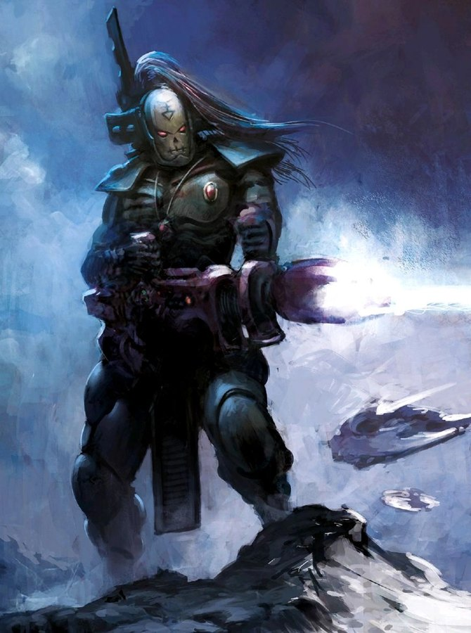
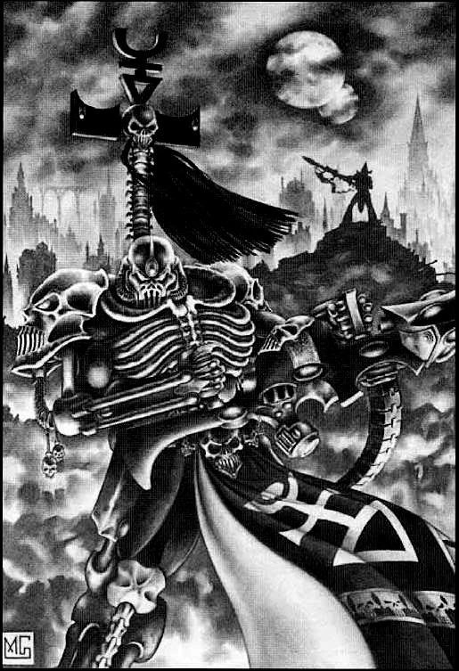

Dark Reapers
| Dark Reapers | |
|---|---|
| Aspect Warriors of the Asuryani | |
 A Dark Reaper with a reaper launcher Artwork © Games Workshop | |
| Path | Path of the Warrior |
| Patron | Kaela Mensha Khaine in his aspect as the Destroyer |
| Founder | Maugan Ra, Phoenix Lord, "Harvester of Souls" |
| Origin | Craftworld Altansar, after the Fall of the Aeldari (c. M30, estimated) |
| Colours | Black and midnight blue |
| Role | Long-range heavy weapon fire support |
| Squad size | Three to five, one of whom may be an Exarch |
| Shrines | Jade Scythe; Three Deaths |
The Dark Reapers are the most menacing of the Aspect Warriors of the Craftworld Aeldari. They follow the war god Kaela Mensha Khaine in his aspect as the Destroyer, and their skull-masked armour echoes that of their founder, the Phoenix Lord Maugan Ra. They specialise in destructive, long-range heavy weapons.[1]
On the field they fight behind the main line, covering the advance of faster Aeldari troops and picking off the enemy's heaviest assets.[2]
Origins
[edit]When Asurmen taught his brethren the arts of war, Maugan Ra fell furthest from the fold. He made baroque weapons of occult nature, not blades but dark artefacts that could kill at a distance. As his craft matured he learned that even the mightiest weapon could be used with surgical precision. This led to the Maugetar, the Harvester, and then to the disciplines of the Aspect.[3]
The Aspect traces to the craftworld Altansar in the years after the Fall of the Aeldari and the birth of Slaanesh. Altansar survived the psychic shockwave that broke the Aeldari Empire, but was caught in the gravity well of the Eye of Terror, and within five hundred Terran years of the Fall it was swallowed by the Warp. Only Maugan Ra survived.[1][a]

Role and equipment
[edit]Dark Reaper Aspect Armour is the colour of midnight and made of interlocking plates. It is heavier than other Aspect armour, so the Aspect moves slowly, which matters little for a fire-support role. The sacred weapon is the reaper launcher, a long-barrelled missile weapon whose salvo of small armour-piercing missiles can pierce all but the most heavily protected targets.[1]
Stabilisers and clamps on the leg armour absorb recoil and hold the Reaper steady. Rangefinder vanes on the helmet allow target lock on even fast vehicles, and a mind-link lets the warrior "see" out of the muzzle of the launcher, so that it is almost impossible to miss. Maugan Ra teaches that the kiss of death is best delivered from afar.[2][4]
Exarchs and shrines
[edit]Each Aspect Shrine is led by an Exarch, an Aeldari who has taken the Path of the Warrior for good and serves as a priest of Khaine. The Exarch's armour holds the souls of earlier wearers, giving knowledge and psychic energy. A Dark Reaper Exarch may carry an Aeldari missile launcher, a tempest launcher or a shuriken cannon instead of the reaper launcher, and fires faster without losing accuracy.[1]
The Shrine of the Jade Scythe seeks to destroy as many foes as possible in one overwhelming volley. The Shrine of the Three Deaths seeks to destroy the foe on every plane of existence, and the Drukhari who often work with it hold a certain respect for its commitment to annihilation.[1]
Timeline
[edit]| Date | Event |
|---|---|
| c. M30 (estimated) | Fall of the Aeldari; Altansar is caught by the Eye of Terror |
| Within five centuries of the Fall | Altansar swallowed by the Warp; Maugan Ra alone remains |
| Date not recorded | Maugan Ra develops the discipline of the Dark Reaper Aspect, which the records trace to Altansar |
See also
[edit]

Notes
[edit]- ^ The Fall of the Aeldari is placed in the 30th millennium. The sources give no year, so c. M30 is an estimate.